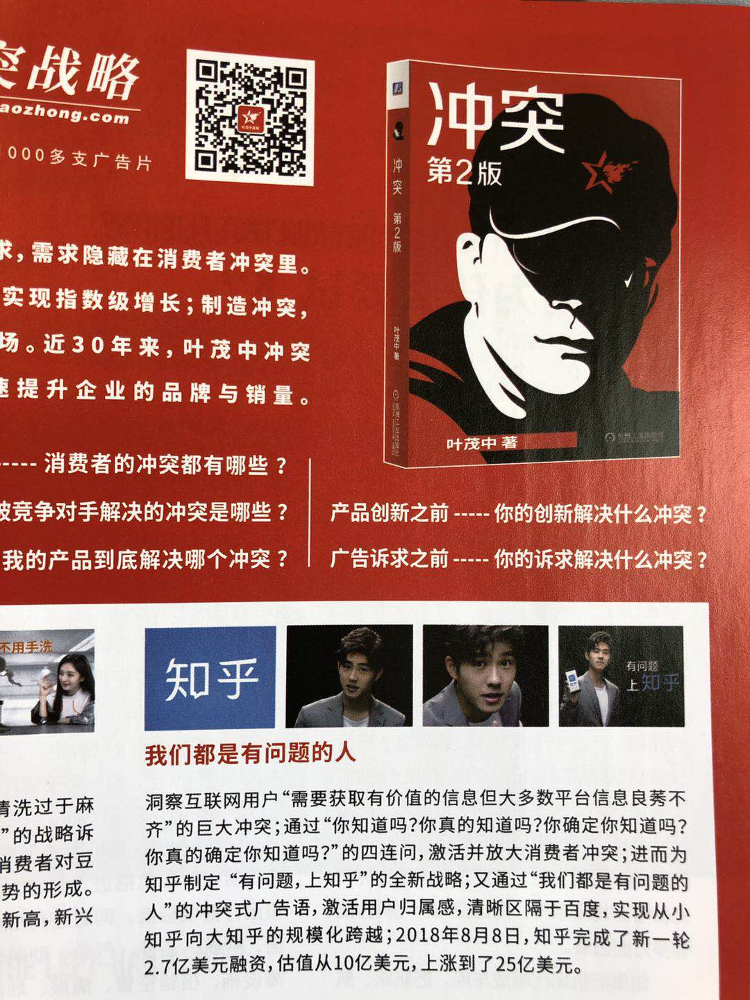

火花 Sparkle
这里记录一些学生产品经理的观察和思考。一家之言，定有谬误之处，请诸君不吝指教。
今天的会前奇思：知乎--广告，文案和时间线
发布于2019/06/03
今天晚上有苹果一年四度的特别活动（Special Event）。一年中，春季三月份一般发布一些小玩意，六月份的则是雷打不动的WWDC（开发者大会），每年会在大会上推出新iOS Beta 系统，
展示 (在Android 上已经发展两三年的已经成熟的) 新Feature。
这为开发者留出三个月的时间做开发、适配。九月份的发布会是一年的重头戏，相当于科技界的春晚吧。发布的新iPhone 则加载了已经优化了6个或7个beta 版本的最新iOS 系统。
十月十一月有可能还有一些发布会，iPad 啊，Macbook 啊，可能会发布一些苹果在九月份发布上会被iPhone 抢了风头的物品。
我挺喜欢六月份。六月份的北京天气不是太热（深圳则开始热到崩溃）；六月份有足球最顶级赛事——欧冠——的决赛（即使是今年踢得太难看了）；六月份有WWDC，观看直播让我这个“果粉”，或者叫科技粉， 有种恍惚间加入了苹果参与产品设计的纵横睥睨的感觉。如果不是所有的梯子都被暂时烧了就更好了—— 这时候更能体会到chrome 选中文本鼠标右键和地址栏输入后回车“用Google 搜索”已经成为了一种习惯。
1. 开屏广告
话题扯远了。Anyway，在等待WWDC 在凌晨1点直播的时候，我熟练地打开了知乎，想关注“如何评价WWDC 2019”。
我用的是苹果手机哈，安卓什么情况我不清楚，不敢置喙。知乎App 上的载入过程呢，现在是这样:
1.知乎的载入界面，展示1-2秒左右

2.知乎接的（非全屏）开屏广告，3秒，可跳过

目前，在我常用的几个App 中，微博，36Kr，QQ音乐都是仅有本产品的载入界面展示，

即使是接开屏广告也不会分成两时间段展示。知乎以前也是这样的。知乎你变了。

网易云音乐倒是和知乎是一样的，两段式广告。

问题来了，为什么要强行在前面插入一个产品的全屏载入界面呢？白白浪费了用户的2秒钟时间。我这面目前只想到一个原因：想显得高大上，和其他大厂产品保持一致。 其实开屏广告问题不大，微博CEO来去之间曾爆料一个开屏三秒100万，不丢人，不用藏着掖着。


从用户体验的角度出发，应该加一个判断，如果在某一时间段已经展示了多少次，则下次进入App时不显示广告。 在搜索“开屏广告”时，发现了桃花仙坞的《APP开屏广告设计之路》，值得学习。
2. 文案
再说说这个文案。我对这个Slogan 有一定的看法。在载入界面展示“我们都是有问题的人”，现在“有问题”的语义已经“没有问题”了吗？
我作为用户，对这个表达有点“膈应”。之前的口号是“有问题，上知乎”。这里的“有问题”，给我的感受是是人有疑问，上“知乎”这个网站和网友进行交流，寻求解答。
另外一个比较玄学的角度，（以下纯是个人解读，未参考任何观点，本人没学过语言学，仅供参考）
默读“有问题，上知乎”时，由于是两个三字短语，你的重音是放在“题”和“乎”上的。而“问题”这个词语暧昧就暧昧在，如果强调“题”，就是代表疑问。 “老师，他有问题！”这个题听起来比较“正式”，不太轻佻，应该是代表有不懂的地方，需要老师解答。 而“老师，他有问题！”，这个题如果轻读了，或者重心在问上，就会给人一种“评价人品、行为”等的感觉。而我们都是“有问题的人”，是不是给用户一种“这人有问题”的感觉？我个人看了觉得比较别扭吧。
从“发现更大的世界”到“有问题”，我感受到知乎的发展方向，已经稍有所改变。可能想要从KOL 高质量社区向平民化社区发展吧。之前看过一篇文章， 说知乎现在面临的问题之一是没法为大V们提供足够的正向反馈：没有合适的变现方法，没有一呼百应的超然地位，从而使大V们没有动力继续在社区内持续输出高质量内容。 大V的出走可能导致整体文字质量的下降，但是我认为，吸引沉默的大多数用户发言，也不失为一种好的办法。只要有人在创作，只要有观点的碰撞，就能够产生有质量的内容，能够让读者从中受益。 相反，靠那种“人在法国，刚下飞船”的大V，人们一开始会“哇好厉害”，但是更多的是猎奇的心理。总让你看魔术，失去兴趣的那一天你会直接走掉，况且有些魔术师实在是滥竽充数； 而人们熙熙攘攘以亲身体验讨论着“5000块电视买索尼还是三星”的时候，我反而觉得更接地气。内容为王，做好搜索和索引，内容对于社区来说真的不嫌多。 知乎新对所有用户开放的“创作者中心”功能，就是对大众用户的一种激励手段。
有人可能会举“百度知道”为反例。在“百度知道”里，激励答主回答的是什么？是悬赏分。一个题目发出来，悬赏分是要给到“最佳答案”的。所以很多人“有枣没枣打一竿子再说”，先复制黏贴个内容； 知乎社区的激励是什么？是“赞”，是“关注”，是个人形象的建立。建立个人形象怎么可能会瞎乱搞些驴唇不对马嘴的东西上来？从机制上已经确定了低质量答案是无法生存的。
奇妙的是，6月8日我坐飞机从北京到深圳，机上杂志中刊登的广告如果真实，恰巧描述了知乎文案的生成过程。


看起来这个叶茂中对知乎的slogan很引以为荣。对此我想说，知乎融资与估值和这文案的质量一点关系都没有，世界杯期间买了那么多广告，想不火都难。
3. 时间线
知乎专栏文章一直存在一个时间线问题：根据算法，知乎会推荐给用户一些相关的专栏文章。可是，有些专栏文章是很具有时效性的，导致了用户的时间线出现了问题。
你经历过在世界杯决赛结束后的一周以后，知乎时间线上出现了决赛前的首发阵容预测吗？你经历过在6月份，时间线出现了4月份的装机推荐吗？ 除非出于对比和存档的目的，大多数人不需要这些过期的内容污染自己的时间线。
简单来说，知乎可以在作者发布文章时，让作者选择是否此文章具有时效性。若是，则选择过期日期，并在过期日期前加大推送的频次。在该日期后，此文章将不会被推送至时间线上， 不过不影响在作者专栏或首页查看。
#一点小建议#